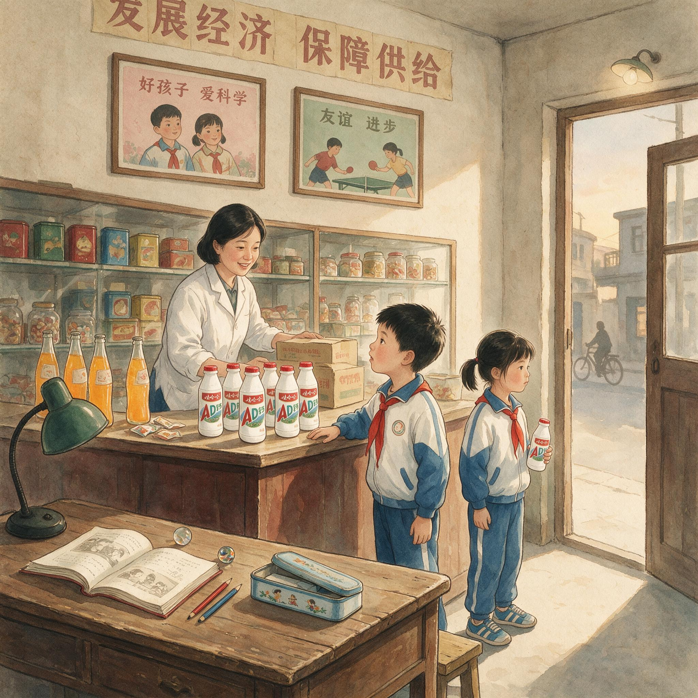

第 7 章
儿童饮品的占位实验
把时钟拨回1995年。编号95-MR-038的市场分析报告只有十六页，纸质已经泛黄，装订钉的锈迹渗进了封面右下角。报告完成于这一年的11月，由娃哈哈市场部调研科编制，印数五份，分发范围限定在总经理办公室、销售公司、市场部、研发中心与财务部。
十五年后有人从档案室调出这份报告时，发现最后一页的结论栏里只有一行铅笔字——“没有品类，只有概念。”笔迹潦草，用力很重，石墨在纸面上压出了凹痕。

娃哈哈AD钙奶早期产品包装
AI 生成插图，非史实影像。
报告的核心数据来自北京、上海、广州、杭州四个城市的一千二百份问卷。受访对象是学龄前儿童的家长。调查结果并不复杂：百分之七十三的家长表示“愿意为孩子购买有营养的饮品”。但当追问“什么是营养饮品”时，百分之六十一的人回答“含钙的”，百分之四十五的人提到“含锌的”，只有百分之九的人能说出任何一种维生素的具体功能。
报告附了一份竞品清单——乐百氏奶、太阳神口服液、贝贝血宝、娃哈哈果奶——每个产品旁边标注了零售价格、铺货区域和估算的年销售额。四个产品加起来，年销售额不超过五亿元。
这份报告没有出现在任何商学院的案例库中。它被钉在娃哈哈的内部档案里，编号95-MR-038，作为一份常规市场调研归档。
但它在1995年冬天摆上宗庆后的办公桌时，承载的信息量远远超过了十六页纸所能容纳的范围。1996年初的中国儿童饮品市场，用“空白”来描述并不准确。货架上不是没有产品。乐百氏奶在华南地区的超市货架上占据着稳定的排面，它的广告语是“今天你喝了没有”——这句话强调的不是品类归属，而是饮用频次。太阳神口服液走的是保健品路线，柜台摆在药店的玻璃柜里，而不是食品店的开放式货架上。贝贝血宝主打补铁补血，一百毫升装零售价超过五元，相当于当时一斤猪肉的价格，年销量卡在两千万瓶上下，始终突破不了华东区域市场。
这些产品各自为战，各自守着一小块阵地，但没有一个品牌完成过全国性的品类教育。这就是定位理论教科书里不会写到的市场形态。特劳特和里斯在《定位》中假设的前提是：竞争已经存在，品类已经形成，消费者的心智地图上有明确的坐标网格。
企业要做的是在已有的坐标网格中找到一个空白点，然后占据它。但1995年的中国儿童饮品市场没有这张网格。消费者不知道“儿童营养饮品”应该是什么，零售商不知道应该在货架上为这个品类留出多大的排面，经销商不知道这个品类能走多大的量。
宗庆后面临的，不是一个定位问题。他面临的是一个定义问题——他必须先创造一个品类，然后才能占据它。这个判断的成本很高。如果品类教育失败，投入的广告费用和渠道资源就会变成沉没成本，而且没有任何回收的可能。如果品类教育成功，但竞品快速跟进，先行者的优势可能在三个月内被蚕食殆尽。
乐百氏当时的产品线已经覆盖了乳酸菌饮品和果奶，在广东中山和湖北武汉都有生产基地，产能储备充足。一旦它看到市场信号，完全有能力在短期内推出对标产品——后来事实证明，乐百氏的反应周期是七个月，但这在1995年冬天是无法预测的变量。宗庆后的决策逻辑，体现在随后的一系列动作中。
他没有选择先做消费者教育再铺货的渐进路线——先在几个城市试点，收集反馈数据，调整产品定位，然后再逐步扩大市场范围。他也没有选择先在区域市场建立根据地再全国推广的谨慎策略——先在华东或华南做到市场占有率第一，积累足够的现金流和品牌势能，再向其他区域扩张。他选择了一步到位：在全国范围内同时启动广告轰炸和渠道铺货。
这个选择的依据，建立在两个可计算的变量上。第一个变量是媒介集中度。1996年，中央电视台一套的黄金时段广告可以在一周内触达超过两亿观众。全国省级卫视的覆盖率加在一起也不及央视一套的一半。当时中国家庭平均能接收到的电视频道数量不到六个，央视一套是几乎所有家庭的默认频道。这意味着，只要拿下央视的广告时段，品类教育的信息就能以最低的边际成本覆盖最大规模的人群。
娃哈哈在1995年底就锁定了央视一套晚间时段的位置——新闻联播之后、天气预报之前的十五秒标版，加上晚间电视剧场中间的三十秒插播。
根据央视广告部1996年第一季度的刊例价记录和播出排期表，这个组合的投放频次是每周四十二次，平均每天六次。如果按每千人次到达成本计算，这个投放密度的效率是省级卫视组合的三倍以上。第二个变量是渠道可控性。娃哈哈在1994年建立的联销体制度，到1996年初已经覆盖了全国二十三个省份的八百多个县级市场。联销体的核心机制是保证金制度——经销商必须提前向娃哈哈缴纳相当于年销售额百分之十的保证金，才能获得区域独家经销权。
这个制度让娃哈哈掌握了一个关键能力：它可以要求经销商在指定时间内完成新品铺货，否则保证金面临扣罚。经销商每月必须向娃哈哈报送进销存报表，这意味着公司总部可以实时掌握各区域的销售数据和库存水平。
这两个变量叠加在一起，产生了一个在定位理论框架内难以解释的结果：品类教育不需要依赖心智认知的逐步积累——那种需要通过持续的消费者沟通、口碑传播和品牌体验来慢慢建立的认知过程——而是可以通过媒介的集中轰炸和渠道的强制铺货，在极短时间内制造出一个品类的市场事实。
AD钙奶的产品设计本身也体现了这种逻辑。“AD钙”这个名称不是从消费者心智研究中产生的。它是从社会已有认知中直接嫁接过来的。1990年代初，全国妇联和卫生部联合推动的“儿童营养改善计划”已经让“补钙”成为城市家庭的日常话题。各地的妇幼保健院在儿童体检中普遍增加了微量元素检测项目，钙和锌是最常被提及的两项指标。娃哈哈不需要从头教育消费者“为什么要补钙”——这个教育工作已经被公共政策完成了。它只需要告诉消费者“AD钙奶就是补钙的”。产品配方中添加了维生素A和维生素D，以及每百毫升一百二十毫克的钙。
这个钙含量在营养学上并不算高——同期日本市场上同类儿童饮品的钙含量普遍在每百毫升一百五十毫克以上——但足以支撑“营养饮品”的功能宣称。更重要的是，“AD钙”这个名称本身就是一个完整的产品定位：它告诉消费者这个产品里有什么（维生素A、维生素D和钙），暗示了它的功能（促进钙吸收、帮助骨骼发育），同时规避了《广告法》对保健食品功能宣称的严格审批要求。
广告语的确定过程，记录在娃哈哈广告部1996年1月的一份创意简报中。这份简报只有四页纸，列出了三个备选方案：“娃哈哈AD钙奶，营养又补钙”、“天天喝AD钙，健康又聪明”，以及最终选定的“喝了娃哈哈，吃饭就是香”。简报里附了一份内部测试的结果：第三条方案在杭州、南京两个城市各一百名家长的拦截访问中得分最高。得分的原因被归纳为两点：一是它没有直接宣称营养成分——这在当时是一个聪明的规避策略，因为工商部门对食品广告中的营养宣称正在加强监管——而是直接关联了一个家长最关心的行为结果：孩子吃饭香；
二是它的句式简短，节奏感强，适合在十五秒电视广告中重复三遍。这句广告语从1996年3月开始在央视密集播放。配合电视广告的，是覆盖全国主要城市公交站台和社区公告栏的户外海报。海报的设计极其简单：一个胖乎乎的卡通娃娃举着一瓶AD钙奶，旁边是放大的广告语，底部标注“各大商场食品柜台有售”。设计稿上没有出现任何营养数据或功能说明。整个视觉传达的核心信息只有一个：这个产品是给孩子喝的。
铺货行动几乎与广告同步展开。联销体网络在1996年2月接到销售公司的通知：AD钙奶将在3月1日正式发货，各区域经销商必须在2月28日前完成辖区内所有A类零售终端的铺货。A类终端的定义是：县级以上城市的主要食品商场、连锁超市和大型社区便利店。通知里附带了一份铺货标准：每个A类终端的最低排面数量是六瓶，陈列位置必须在儿童食品区或乳制品区的黄金视线高度——即货架的第二层或第三层。
根据娃哈哈销售管理部1996年4月的一份内部通报，到4月底，全国已有一千二百个县级市场的超过四万个零售终端上架了AD钙奶。这个数字意味着什么？作为对比，乐百氏奶在1993年上市时，用了整整一年才覆盖到五百个县级市场。太阳神口服液从1988年上市到覆盖全国主要城市，用了近三年时间。
速度的秘密在于“销地产”布局。娃哈哈从1994年开始在全国主要区域建设生产基地。到1996年初，已经在杭州、涪陵、宜昌、长沙、广元五个城市拥有生产线。每个生产基地的辐射半径约为五百公里，在这个范围内的经销商可以直接从基地提货，物流时间控制在四十八小时以内。这意味着当央视广告在全国范围内制造出消费需求时，各地的货架已经准备好了产品——不需要经过漫长的跨省调拨和多级分销。
涪陵基地是一个值得注意的节点。这个基地建于1994年，是娃哈哈响应国务院对口支援三峡库区建设的项目。
基地选址在涪陵的理由很简单：它位于长江沿岸，水运便利，可以辐射重庆、四川、贵州、云南等西南省份。在AD钙奶上市之前，涪陵基地的年产能利用率只有百分之六十左右。AD钙奶的订单在1996年3月涌入后，涪陵基地的生产线在一个月内从两班倒调整为三班倒，日产量从八万瓶提升到十二万瓶。
1996年4月，AD钙奶上市一个月后，娃哈哈市场部做了一次快速回访。回访覆盖了十个省会城市的二百个零售终端，结果以内部备忘录的形式报送了销售公司和总经理办公室。备忘录里的关键数据是：百分之九十一的终端已经售出过AD钙奶，百分之六十七的终端出现了断货后补货的情况。断货最严重的是郑州和武汉市场，部分终端的断货时间长达一周——这意味着经销商对需求的预估严重不足，安全库存设置偏低。
这份备忘录让宗庆后做出了一个关键判断：加大产能。1996年5月，娃哈哈启动了杭州生产基地的AD钙奶生产线扩建项目。新增两条灌装线，设计日产能从原来的二十万瓶提升到五十万瓶。
设备采购合同签给了德国克朗斯公司——这是娃哈哈第一次从克朗斯采购灌装设备，此前它主要使用国产设备和部分日本二手设备。克朗斯灌装线的价格是国产设备的三倍，但产能稳定性高出百分之四十以上。这笔采购在娃哈哈内部有过争议，反对意见集中在投资回报周期上——按当时的财务测算，新增产能需要至少十八个月才能消化完毕。但宗庆后坚持了这笔采购。他在一次内部会议上说了一句话，后来被记录在会议纪要里：“产能不够比产能过剩更致命。”
公司开始与成都、沈阳两地的地方政府洽谈新建生产基地的事宜。成都基地的谈判在1996年7月取得突破性进展——成都市政府同意以优惠价格提供工业用地，条件是娃哈哈必须在当地注册独立法人公司，税收留在成都。沈阳基地的谈判则拖延了几个月，原因是当地政府希望娃哈哈与一家濒临破产的本地乳品厂合资建厂，而宗庆后坚持独资运营。
竞品的反应比预期的慢。乐百氏直到1996年6月才注意到AD钙奶的销售数据变化。乐百氏当时的主要精力放在华南市场的深耕上，其管理层认为儿童饮品的主战场在广东和福建——这两个省份的儿童饮品消费量占全国的百分之四十以上——对北方市场的重视程度不足。等到乐百氏的销售报表显示湖南、湖北、河南等中部省份的销量出现下滑趋势时，AD钙奶已经完成了第一轮全国铺货。乐百氏在1996年7月紧急启动了跟进策略。
它推出了一款名为“乐百氏钙奶”的产品，配方和包装都与AD钙奶高度相似——同样的二百毫升塑料瓶装，同样的粉红色标签设计，同样的维生素A、D加钙的配方组合。广告语定为“乐百氏钙奶，好喝又补钙”。
但乐百氏面临两个结构性劣势。第一个劣势是渠道覆盖。乐百氏的经销商网络在华南地区密度很高，但在长江以北明显薄弱。它在河北、河南、山西、陕西等北方省份的经销商数量不到娃哈哈的一半，而且这些经销商的资金实力和终端控制力也弱于娃哈哈的联销体成员。当乐百氏钙奶在1996年8月开始铺货时，它在北方省份只能覆盖到地级市层面，无法下沉到县城和乡镇市场。
第二个劣势是媒介声量。乐百氏在央视的广告时段采购量远低于娃哈哈——根据央视广告部的客户排名记录，娃哈哈在1996年全年的央视广告投放额排在食品饮料类客户的前三位，乐百氏排在十名之外。这意味着乐百氏无法实现与娃哈哈同等密度的媒介轰炸。
当乐百氏钙奶的广告开始在央视播出时，AD钙奶的广告已经持续轰炸了五个月，“喝了娃哈哈，吃饭就是香”这句广告语已经形成了初步的记忆惯性。到1996年底，AD钙奶的销售额突破了十亿元。乐百氏钙奶的全年销售额不到三亿元——其中大部分集中在华南市场，在北方省份的销量几乎可以忽略不计。太阳神口服液的市场份额进一步萎缩，其儿童产品线在1997年初被整体裁撤。
这个结果似乎验证了宗庆后的判断。在一个品类空白、消费者认知模糊的市场里，谁先通过广告和渠道把产品铺到消费者眼前，谁就占据了品类。心智差异化不重要——至少不是最重要的。货架可见性才重要。
定位理论在这个案例中遭遇了什么？它不是被误读了，而是被重新定义了。在特劳特和里斯的框架里，定位是关于心智的——你要在潜在顾客的心智中占据一个独一无二的位置。这个位置是通过差异化的价值主张来建立的：你的产品与竞品有什么不同？它能为消费者提供什么独特的利益？这些问题的答案构成了定位的核心。
但在宗庆后的实践中，定位变成了关于货架的——你要在零售终端的货架上占据一个不可替代的位置。心智位置不是通过差异化的价值主张来建立的，而是通过广告的重复轰炸和渠道的物理占位来强化的。这不是执行失误。这是中国市场结构对理论框架的适应性变异。
定位理论诞生于1970年代的美国市场。那个市场的特征是：品类结构已经成熟，消费者的品牌辨别能力已经建立，媒介渠道是分散的——三大电视网、数百家地方电视台、数千种报纸杂志共同构成了一个碎片化的传播环境。在这种市场结构下，“占据心智”确实是最有效的竞争策略：你无法通过媒体轰炸来垄断消费者的注意力，因为注意力本身就是分散的；你必须通过差异化的价值主张来赢得消费者的主动选择。
但1996年的中国市场结构完全不同。媒介高度集中——央视一套可以触达全国半数以上的家庭；零售业态分散但可控——经销商体系可以通过保证金制度被有效管理；消费者认知初建——他们对品类的理解模糊而可塑，对品牌的忠诚度尚未形成。
在这种市场结构下，“占据货架”比“占据心智”更有效率：你可以通过控制媒介和渠道来制造一个品类的市场事实，而不需要等待消费者心智认知的逐步积累。宗庆后选择了后者。这不是因为他不懂定位理论——事实上娃哈哈在1990年代中期已经开始接触特劳特和里斯的思想，公司内部也有人提议过更精细化的品牌管理方案。他选择“广告加渠道”的模式，是因为这个模式在他面对的市场结构中是最优解。
但这份成功里埋着一颗种子。AD钙奶的成功逻辑可以简化为一个公式：品类占位等于广告声量乘以渠道覆盖率。这个公式在1996年是成立的，因为市场的供给端和需求端都处于低水平均衡状态——消费者没有成熟的品牌辨别能力，竞品没有快速反应的组织能力，渠道没有复杂的层级结构。但这个公式的有效性高度依赖于一个前提：市场结构保持不变。而市场结构不会保持不变。
第一个变化在1997年就开始显现。乐百氏在钙奶市场受挫后调整了竞争策略。
它不再试图在同一个品类里与娃哈哈正面竞争——它已经认识到在“广告加渠道”的战场上自己打不过娃哈哈——而是转而开辟新的细分市场。乐百氏在1997年下半年推出了“健康快车”系列，主打添加双歧因子的功能性饮品，定价比AD钙奶高出百分之三十。这标志着竞品开始学会绕开娃哈哈的渠道壁垒，在心智层面寻找差异化切口。
第二个变化更隐蔽但影响更深。AD钙奶的成功让娃哈哈内部形成了一种决策惯性：凡是新品上市，就复制“央视广告加联销体铺货”的模式。这种模式在AD钙奶上证明有效，在随后推出的非常可乐上也一度有效——非常可乐在1998年上市后同样依靠央视广告轰炸和联销体铺货，在县城和乡镇市场快速起量。但这种模式的有效边界正在被透支。每复制一次，“广告加渠道”的边际效用就递减一次：消费者对同质化的营销手段产生了免疫力——当第十个品类的广告用同样的套路出现在电视上时，消费者的注意力会自动过滤掉它；
这份成功在财务数据上表现得无可辩驳。1996年第四季度，AD钙奶的单月销售额连续突破一亿元，十二月的出货量达到一亿两千万瓶——这个数字意味着全国平均每十个学龄前儿童中，就有一个在那个月喝到了AD钙奶。娃哈哈销售管理部的进销存报表显示，到十二月底，全国经销商库存周转天数平均为十一天，低于公司设定的十五天安全线。这意味着产品不是在经销商仓库里等待销售，而是在货架上被消费者直接买走。
杭州生产基地的两条克朗斯灌装线在十一月完成了安装调试，日产能从二十万瓶跃升至五十万瓶，但产能利用率的爬坡曲线并不平滑——十二月的实际日产量在三十五万瓶到四十二万瓶之间波动，瓶颈不在灌装环节，而在上游的奶源供应。娃哈哈当时没有自有牧场，原奶采购依赖杭州周边的散户奶农和几家小型乳品加工厂。AD钙奶的爆发式增长让原奶供应出现了周期性紧张，采购部不得不将收购半径从杭州周边一百公里扩大到三百公里，甚至开始从安徽北部调运原奶。
运输成本的上升在当月财务报表上留下了一个微小的凸起——每瓶AD钙奶的物流成本从零点零三元上升到零点零五元，幅度不大，但趋势值得注意。
这个细节在当时没有引起太多关注。所有人的注意力都集中在销售额和市场份额上。
1997年1月，娃哈哈在杭州总部召开了年度经销商大会。参会的一千二百名联销体成员中，有超过八百人在1996年完成了AD钙奶的销售指标。宗庆后在大会发言中宣布了一个数字：AD钙奶在1996年进入了全国一千四百个县级市场——这个覆盖率超过了当时中国县级行政区划总数的一半。
他没用“定位”这个词。他用的是“占位”——“我们占住了儿童营养饮品这个位置，别人想进来，就得花三倍的力气。”台下掌声热烈。
经销商们有理由鼓掌：AD钙奶的毛利率虽然只有百分之十二，远低于太阳神口服液曾经维持的百分之四十以上的暴利空间，但它的周转速度快。一个县级经销商如果每月能走量两万瓶，月利润就是四千八百元——相当于当时一个普通公务员一年的工资收入。这种“薄利多销”的模式让经销商赚到了钱，也让娃哈哈锁定了渠道忠诚度。
但“占位”这个词本身暴露了一个认知框架。在宗庆后的表述里，品类位置不是一个需要持续经营的心智资产，而是一个可以被一次性占领的物理空间——就像抢占一个山头，插上旗子，战斗就结束了。这种认知框架与AD钙奶的成功经验完全吻合：央视广告轰炸三个月，联销体铺货四万个终端，销售额破十亿，竞品反应迟缓——整个过程确实像一场干净利落的阵地战。但它忽略了一个关键问题：被“占住”的位置，需要什么样的持续投入才能守住？心智认知不同于物理空间。一个山头被占领后，只要派驻守军，就能阻止敌军登顶。但一个品类位置被占领后，消费者对它的认知会随着时间推移而稀释、变形、甚至被竞品重新定义。
经销商对联销体的强制性铺货要求积累了越来越多的不满——他们被迫为一个又一个新品腾出货架、垫付资金，而这些新品并不都能像AD钙奶一样快速周转。
第三个变化来自零售业态本身。1996年之后，家乐福、沃尔玛等外资零售巨头加速在中国扩张。它们带来的集中采购模式和自有品牌策略，开始侵蚀联销体这种以区域经销商为核心的渠道体系。当零售终端的权力向大型连锁超市集中时，供应商的渠道控制力就被削弱了。娃哈哈可以通过联销体控制经销商，但无法通过经销商控制沃尔玛的货架——沃尔玛的采购决策是由总部集中做出的，它更关心的是品类的整体利润贡献和货架周转率，而不是某个供应商的铺货要求。
这些变化在1996年还只是地平线上的阴影。宗庆后在那一年看到的，是一份份捷报：销售额破十亿、铺货城市破千、市场份额超过百分之六十。这些数字让他有充分的理由相信,“广告加渠道”的模式是可以复制的成功公式。1996年底的娃哈哈沉浸在AD钙奶的成功里，开始规划下一个品类的扩张。
纯净水、茶饮料、果汁——每一个品类都等着被“广告加渠道”的模式征服。那份编号95-MR-038的市场分析报告最终被归档入库。报告最后一页的那行铅笔字——“没有品类，只有概念”——曾经是宗庆后做出判断的依据。但现在它有了另一层含义：当品类可以通过广告和渠道被“制造”出来时,“概念”本身就变成了品类。这种制造能力会让人上瘾，因为它比培育心智认知更快、更可测量、更能产生立竿见影的财务回报。
但它也在暗中标好了价格：一个习惯于用渠道和声量定义品类的企业，最终会失去在心智层面定义品类的能力。当市场结构发生变化——当媒介不再集中、渠道不再可控、消费者不再懵懂——“广告加渠道”模式的有效性就会衰减。到那个时候，企业会发现自己占据了很多货架，但没有占据任何一个心智位置。
这个问题在1996年还没有显现出来。但它的种子已经埋进了AD钙奶的成功里，埋进了那份十六页市场分析报告的最后一页，埋进了那句被验证了的判断——“没有品类，只有概念。”